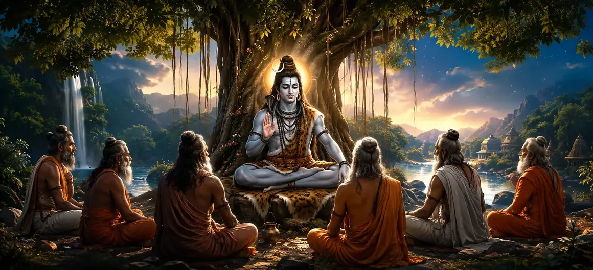

उत्तम बुद्धि में निर्देश
वायवीय संहिता का इकतीसवाँ अध्याय पूर्ण आध्यात्मिक ज्ञान और दिव्य प्राप्ति पर सर्वोच्च निर्देश देता है।
ऋषि वायु परम ज्ञान प्रदान करते हैं जो साधक को अज्ञानता से मुक्त करता है और भगवान शिव के साथ स्थायी मिलन प्रदान करता है।
यह अध्याय आत्मज्ञान, आंतरिक स्पष्टता और सर्वोच्च आध्यात्मिक स्वतंत्रता के लिए निश्चित मार्गदर्शक के रूप में कार्य करता है।
अध्याय 31 की मुख्य बातें
उत्तम बुद्धि
सर्वोच्च पूर्ण सत्य को उजागर करता है जो सभी सांसारिक भ्रमों को तोड़ देता है।
दिव्य अनुभूति
सर्वोच्च चेतना के साथ व्यक्तिगत आत्मा की प्रत्यक्ष पहचान सिखाता है।
मुक्ति पथ
पूर्ण मोक्ष प्राप्त करने के लिए व्यावहारिक आध्यात्मिक अंतर्दृष्टि प्रदान करता है।
अज्ञान दूर करें
अहंकार के संदेह, अंधकार और गलत पहचान को दूर करता है।
सर्वोच्च स्वतंत्रता
शाश्वत सत्य को जानने से मिलने वाली आंतरिक शांति प्रदान करता है।
कथा प्रवाह
उत्कृष्ट अभ्यास के विवरण को कवर करते हुए अध्याय 32 में आसानी से आगे बढ़ता है।
इस अध्याय में मुख्य विषय
सर्वोच्च ज्ञान का सच्चा स्वरूप
ऋषि वायु बताते हैं कि सर्वोच्च ज्ञान केवल बौद्धिक शिक्षा नहीं है, बल्कि दिव्य सत्य का प्रत्यक्ष अनुभवात्मक अहसास है।
यह आंतरिक चेतना को प्रकाशित करता है, बदलती दुनिया के पीछे की अपरिवर्तनीय वास्तविकता को प्रकट करता है।
अज्ञान का पूर्ण नाश
जब पूर्ण ज्ञान का प्रकाश होता है, तो भ्रम (माया) का अंधकार तुरंत दूर हो जाता है।
शरीर और मन के संबंध में गलत धारणाएं गायब हो जाती हैं, केवल शुद्ध जागरूकता रह जाती है।
आत्मा और शिव की पहचान का एहसास
मूल निर्देश से पता चलता है कि व्यक्तिगत आत्मा (जीव) और भगवान शिव मूल रूप से एक ही हैं।
इस अद्वैत सत्य का बोध साधक को सभी भय और दुःखों से मुक्त कर देता है।
अहंकार और सांसारिक मोह को नष्ट करना
सच्चे ज्ञान के लिए अहंकारी अभिमान और क्षुद्र सांसारिक इच्छाओं का पूर्ण समर्पण आवश्यक है।
झूठी पहचान को त्यागकर, साधक को सर्वोच्च आंतरिक शांति प्राप्त होती है।
पूर्ण मुक्ति की स्थिति (मोक्ष)
ऋषि वायु उस व्यक्ति की आनंदमय स्थिति का वर्णन करते हैं जिसने इस ज्ञान पर महारत हासिल कर ली है - बंधन से मुक्त और अनंत काल में स्थापित।
ऐसी प्रबुद्ध आत्मा भगवान शिव के साथ शाश्वत मिलन प्राप्त कर लेती है।
बुद्धि निर्देश का निष्कर्ष
अध्याय 31 वायवीय संहिता की इन सर्वोच्च ज्ञानवर्धक शिक्षाओं की उच्च प्रशंसा के साथ समाप्त होता है।
एकत्रित संत मुक्ति का अंतिम मार्ग बताने के लिए ऋषि वायु के प्रति श्रद्धापूर्वक झुकते हैं।
अध्याय 32 की ओर
इस निर्देश का पूर्ण ज्ञान से पालन करते हुए, ऋषि वायु अध्याय 32, 'उत्कृष्ट अभ्यास का विवरण' सुनाने की तैयारी करते हैं।
अगला अध्याय उन अनुकरणीय प्रथाओं और अनुशासनों की रूपरेखा देता है जो दैनिक जीवन में इस दिव्य अनुभूति को बनाए रखते हैं।
अध्याय 31 की मुख्य शिक्षाएँ
अनुभवात्मक सत्य
बुद्धि प्रत्यक्ष अनुभूति है, महज़ बौद्धिक दर्शन नहीं।
रोशनी
माया और झूठी पहचान के अंधकार को चकनाचूर कर देता है।
अद्वैत एकता
भगवान शिव के साथ आत्मा की पूर्ण एकता को पहचानता है।
अहंकार समर्पण
परम शांति प्राप्त करने के लिए अहंकारी अभिमान को मुक्त करता है।
शाश्वत स्वतंत्रता
पुनर्जन्म के चक्र से पूर्ण मुक्ति सुनिश्चित करता है।
अगले चरण
अध्याय 32 के व्यावहारिक विषयों की ओर ले जाता है।
आध्यात्मिक चिंतन
सच्चा ज्ञान यह अहसास है कि हम कभी भी परमात्मा से अलग नहीं हैं; जब अज्ञान दूर हो जाता है, तो हमारी आत्मा के भीतर भगवान शिव की उज्ज्वल, शाश्वत रोशनी बच जाती है।
अध्याय 31 का संदेश जीना
शरीर और मन से परे अपने सच्चे दिव्य स्वरूप पर प्रतिदिन चिंतन करें।
क्षुद्र अहं की आसक्तियों को छोड़ें और आंतरिक वैराग्य और अनुग्रह के साथ कार्य करें।
मानव अस्तित्व के अंतिम लक्ष्य के रूप में आध्यात्मिक मुक्ति की तलाश करें।
प्रमुख आध्यात्मिक अवधारणाएँ
पूर्ण, पूर्ण आध्यात्मिक ज्ञान का निर्देश।
आध्यात्मिक अज्ञान का पूर्ण उन्मूलन।
जीव और शिव के बीच एकता की अनुभूति.
मुक्ति के मार्ग का प्रकाश।
सच्चे सर्वोच्च स्व का प्रत्यक्ष अहसास।
अध्याय 32 में उत्कृष्ट अभ्यास की प्रस्तावना।
अध्याय सारांश
वायवीय संहिता अध्याय 31 पूर्ण बुद्धि में निर्देश प्रस्तुत करता है। पूर्ण ज्ञान, अज्ञान का विनाश, आत्मा-शिव की पहचान और परम मोक्ष का विवरण देते हुए, यह अध्याय शिव पुराण की सर्वोत्कृष्ट ज्ञानवर्धक शिक्षाएँ प्रदान करता है। यह अध्याय 32, 'उत्कृष्ट अभ्यास का विवरण' का मार्ग प्रशस्त करता है।
अक्सर पूछे जाने वाले प्रश्न
1. वायवीय संहिता अध्याय 31 का प्राथमिक विषय क्या है?
अध्याय 31 पूर्ण ज्ञान (ज्ञान उपदेश) में निर्देश प्रदान करता है, जिसमें पूर्ण आध्यात्मिक ज्ञान और दिव्य एकता की प्राप्ति का विवरण दिया गया है।
2. शिव पुराण के इस अध्याय में पूर्ण ज्ञान को कैसे परिभाषित किया गया है?
पूर्ण ज्ञान को व्यक्तिगत आत्मा और सर्वोच्च भगवान शिव के बीच गैर-अंतर की प्रत्यक्ष अनुभूति के रूप में परिभाषित किया गया है।
3. इस निर्देश को आध्यात्मिक शिक्षाओं का मुकुट क्यों माना जाता है?
यह सभी संदेहों और अज्ञानता को दूर करता है, और सच्चे साधक को स्थायी मुक्ति (मोक्ष) प्रदान करता है।
4. वायवीय संहिता में उत्तम ज्ञान की इन शिक्षाओं की व्याख्या कौन करता है?
ऋषि वायु एकत्रित ऋषियों को ये सर्वोच्च ज्ञानोदय निर्देश देते हैं।
5. अध्याय 31 के बाद नेविगेशन के लिए अगला अध्याय कौन सा है?
नेविगेशन के लिए अगले अध्याय का शीर्षक 'उत्कृष्ट अभ्यास का विवरण' है।
"जब पूर्ण ज्ञान भीतर चमकता है, तो बंधन का भ्रम गायब हो जाता है और आत्मा भगवान शिव की अनंत शांति में विश्राम करती है।"
वायवीय संहिता के माध्यम से जारी रखें
अध्याय 31 उत्तम बुद्धि के निर्देश का समापन करता है। उत्कृष्ट अभ्यास का वर्णन जारी रखें।